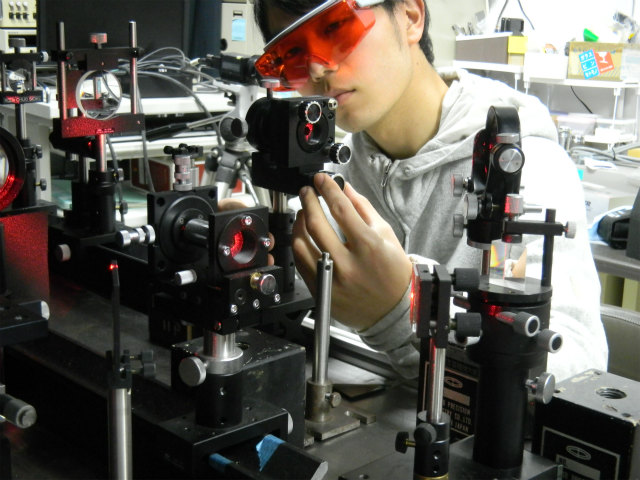
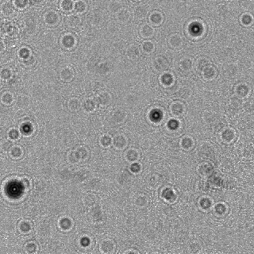
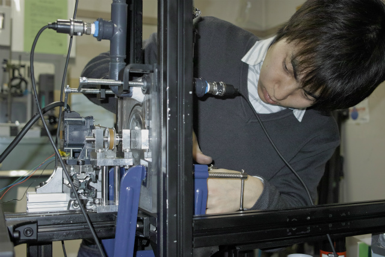
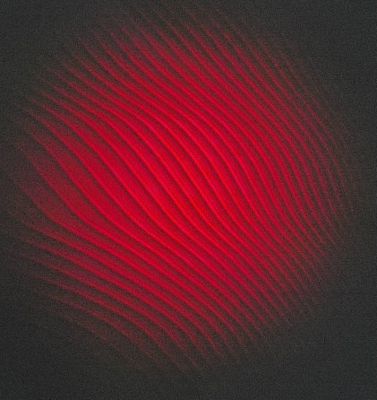
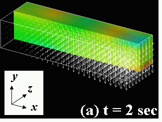
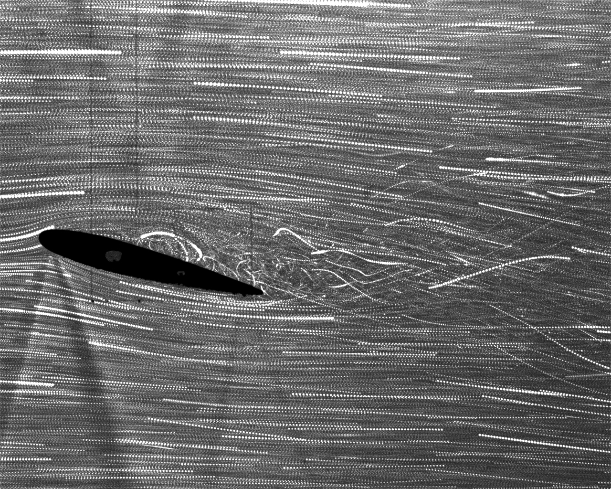
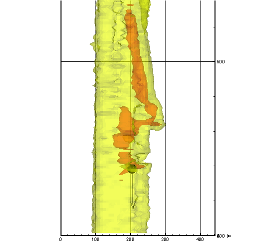
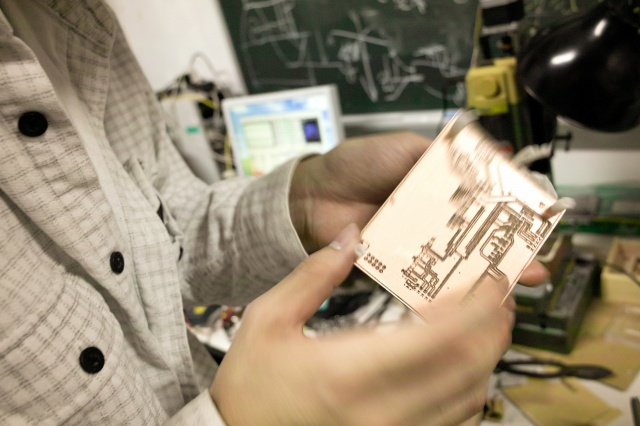

Experimental setup for measuring a vibrating plate

Speckle pattern of a vibrating plate
| Top Page | Research Topics | Research Reports | Research Staff | Machines | Access |
|---|
| Philosophy | Academic-Industrial Collaboration |
Recruits | Information on Lecture |
Links | Glossary |
|---|
|
 Measurement of small particles |
 Holographic patterns of small particles |
|
Experimental setup for measuring a vibrating plate |
Speckle pattern of a vibrating plate |
|
 Centrifugal pump and optical setup for digital in-line holography |
Holographic patterns of tracer particles in a pump casing |
|
Fizeau interferometry |
 Interference pattern |

 Stress Measurement of Cantilever Beam under Dynamic Load by Holographic Particle-Tracking Velocimetry
Stress Measurement of Cantilever Beam under Dynamic Load by Holographic Particle-Tracking Velocimetry
[Keywords: Digital holography, PR model, Three-dimensional stress field]
|
Water channel |
 NACA0012: Particle path |
|
NACA0012: Visualization |
NACA0012: PIV measurement¡ÊClick¡Ë |

Interaction between a Burgers vortex and wake vortex structure generated by a settling particle
[Keywords: Multiphase flow, 2D PIV, paticulate-turbulent phenomena, Quasi-three dimensional vorticity field]
|
 Double sided circuit board |
Electronic circuit fabrication |